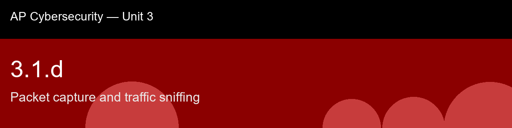

3.1.d, Packet capture and traffic sniffing
Before class today. Packet capture (often called "sniffing") is the process of intercepting and logging network
traffic as it passes across a network interface. Every packet that a network interface card (NIC)
sees can, in principle, be copied and inspected, this is exactly what tools like Wireshark
(graphical) and tcpdump (command-line) do.
The intuition to hold onto: The idea to hold before this lecture: a sniffer is not itself the attack, the attack is whatever let the sniffer see traffic it shouldn't, and whatever that traffic exposed once seen. Wireshark and tcpdump are the exact same tools a network administrator runs every single day to debug a slow connection; nothing about the tool is malicious. That reframing matters because it means the real security question is never "is packet capture happening," it's "who has the position to capture, and is the payload readable once they do", which is precisely the two-part filter this skill hands you.
A myth worth busting before we start: "You need to be an attacker to use Wireshark." → Packet capture is a standard, legitimate network-troubleshooting and security-monitoring tool; it becomes an attack only through unauthorized access or misuse of legitimate positioning (e.g. a misconfigured SPAN port granted to the wrong party).
Today's goal: Explain how packet capture tools intercept network traffic, apply capture and display filters to isolate relevant packets, and analyze a small packet log to identify credentials or indicators of compromise sent in cleartext.
Handout: pre-lecture-handout.docx.

## 3.1.d, Packet capture and traffic sniffing
**Before class today.** **Packet capture** (often called "sniffing") is the process of intercepting and logging network
traffic as it passes across a network interface. Every packet that a network interface card (NIC)
sees can, in principle, be copied and inspected, this is exactly what tools like **Wireshark**
(graphical) and **tcpdump** (command-line) do.
**The intuition to hold onto:** The idea to hold before this lecture: a sniffer is not itself the attack, the attack is whatever let the sniffer see traffic it shouldn't, and whatever that traffic exposed once seen. Wireshark and tcpdump are the exact same tools a network administrator runs every single day to debug a slow connection; nothing about the tool is malicious. That reframing matters because it means the real security question is never "is packet capture happening," it's "who has the position to capture, and is the payload readable once they do", which is precisely the two-part filter this skill hands you.
**A myth worth busting before we start:** "You need to be an attacker to use Wireshark." → Packet capture is a standard, legitimate network-troubleshooting and security-monitoring tool; it becomes an attack only through unauthorized access or misuse of legitimate positioning (e.g. a misconfigured SPAN port granted to the wrong party).
**Today's goal:** Explain how packet capture tools intercept network traffic, apply capture and display filters to isolate relevant packets, and analyze a small packet log to identify credentials or indicators of compromise sent in cleartext.
Handout: `pre-lecture-handout.docx`.